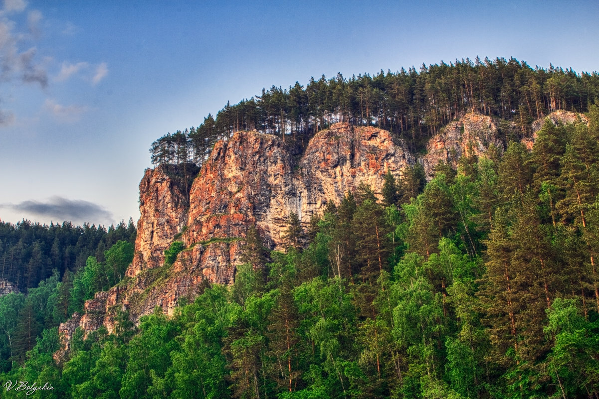

Ю́жный Ура́л — южная и наиболее широкая горная система Уральских гор, располагается между Средним Уралом и Мугоджарами. С запада и востока ограничена Восточно-Европейской и Западно-Сибирской равнинами. Северные границы: границу проводят по широтному участку реки Уфы в районе посёлка Нижний Уфалей[источник не указан 156 дней]. Южные границы с Мугоджарами проходят на территории Актюбинской области Республики Казахстан[2].
